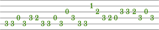
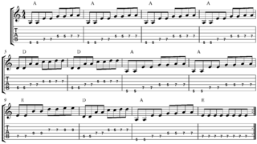

Guitar chords is a way to read music notes. There are many ways to read music. There are notes in the music staff, letters on top of lyrics, and also just lets in a specific order.
What are Chords?
What are Tabs?
Tabs is another way to read music. Instead of using letters they use numbers.
The lines represent each string on the guitar. The numbers represent the number of the fret to hold.
